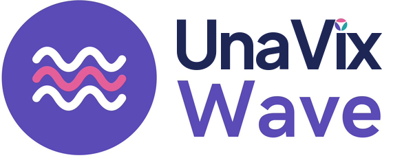
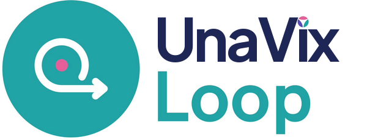
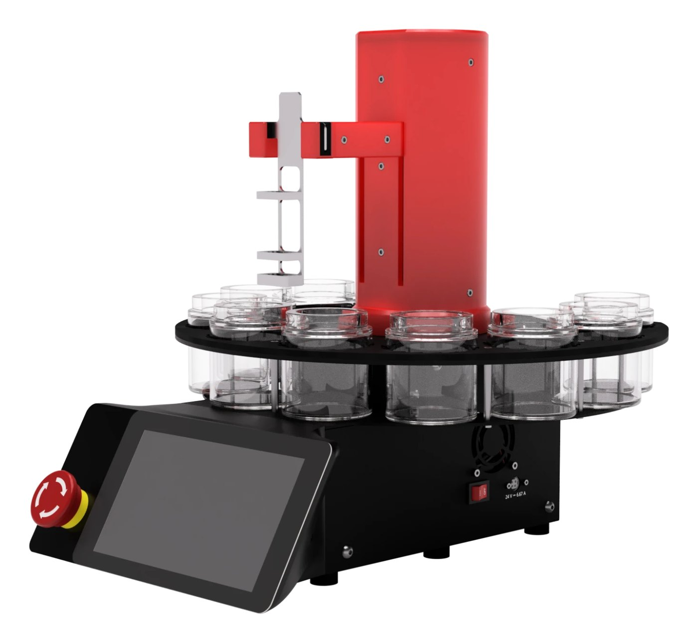
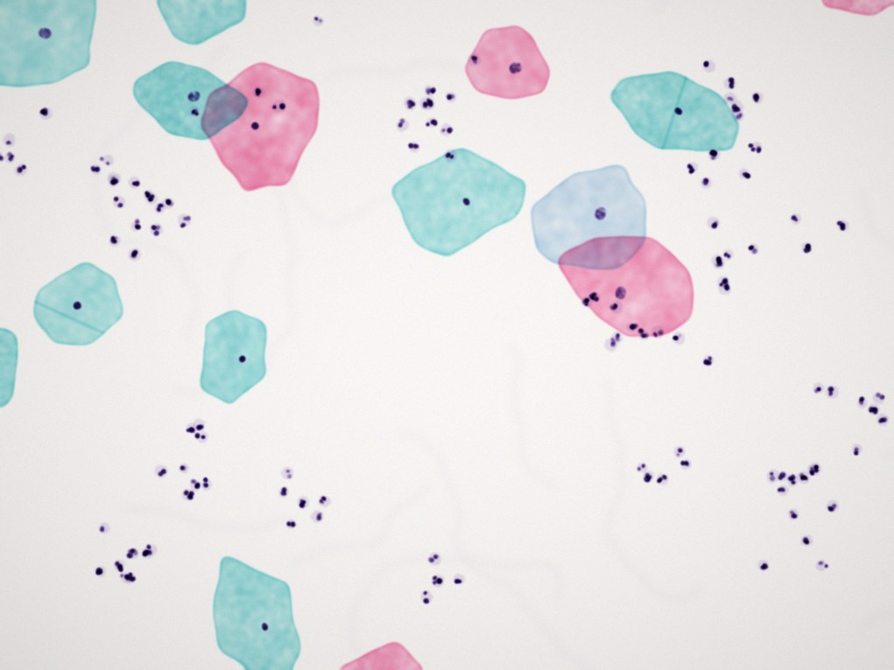

Our solutions
We are designing two clinic models, Wave and Loop, that would screen, triage and treat women in one place, as a mobile clinic in a van or as a fixed clinic. They do not exist yet: we are planning a pilot in Cameroon to test them. The two technologies inside them are further along.
Everything in one clinic
Each clinic is designed to include HPV testing, our automated Pap stainer (GyroStainer), a digital slide scanner, the telecytology portal and thermal ablation. Concept phase
Mobile clinic
We go to the women
A fully equipped van that would travel from village to village, to reach women in rural and hard-to-reach areas. A mobile Loop clinic would use one van, and a mobile Wave clinic two.
Fixed clinic
Women come to us
The same equipment and pathway, set up in an existing health centre or building. Suited to towns and cities, where many women can reach the clinic.
Two rhythms: Wave and Loop
The two models are designed for different settings. They differ in how many women they would serve and how quickly treatment would follow.

Wave: high volume
For sites that many women can reach, like towns and cities.
How a Wave clinic would work
- Day 1Self-sample and HPV testWomen take their own sample in private. All samples are tested together in one batch.
- Day 2Stain and remote reviewHPV-positive women return for a cervical sample, stained by our automated Pap stainer and read through the portal.
- Day 2Treatment as results arriveCIN2 and CIN3 are treated with thermal ablation. Suspected cancers are referred.

Loop: lower volume
For smaller or remote communities, where women are treated in one visit.
How a Loop clinic would work
- MorningSelf-sample and rapid HPV testEach woman takes her own sample and gets her HPV result in about an hour.
- AfternoonStain and remote reviewHPV-positive women give a cervical sample, stained by our automated Pap stainer and read through the portal.
- AfternoonTreatment before she goes homeCIN2 and CIN3 are treated with thermal ablation. Suspected cancers are referred.
Next steps
Testing the clinics step by step
Wave and Loop will only be offered once pilots show that they work.
Pilot 1 · Planned in Cameroon
Testing in the field
With the support of community health workers, women take their own HPV sample in their community. The pilot compares two ways of testing these samples:
In both, HPV-positive women are referred for a cervical sample and triage by telecytology, then treatment where needed.
- Pilot 2 · Same-day care: LoopIf Pilot 1 succeeds: testing, triage and, if needed, treatment in a single visit.
- Pilot 3 · Two-day care: WaveLater: testing on day one, triage and treatment on day two, to screen more women each day.
Autostainer
GyroStainer
Lab validated · Pilot plannedA compact auto-stainer that applies the Pap stain consistently, so slides are easier to read and results more reliable. Other staining protocols, such as H&E or Giemsa, can also be programmed and run on GyroStainer.
Validated in the lab at the Geneva University Hospitals, with a field pilot planned. It is designed for every Wave and Loop clinic, and for existing laboratories and clinics, enabling faster and high-accuracy results.

Our pre-validated Pap stain protocol
Sized for decentralised, low-throughput triage, GyroStainer carries up to four slides through every stain, rinse and dehydration bath with precise timing, then dries them ready for scanning. Protocols are chosen on the touchscreen, or created and edited from a web browser. Follow the full protocol below, sped up.
Four slides loaded
Software
Telecytology portal
In development · Pilot plannedThe portal is designed to connect each site with a trusted network of pathologists, who review slides remotely and return results in under an hour, so women can be treated straight away. No pathologist would be needed on site.
Designed for every Wave and Loop clinic, and for existing clinics and laboratories without a pathologist.
From stained slide to result
- DigitiseA digital microscope scans the stained slide into a high-resolution image.
- UploadThe image is uploaded to the portal automatically, with the clinical information needed for a diagnosis.
- Review and returnA pathologist from our network reads the slide and sends the result and recommendation back to the clinic.
A simple interface
A preview of what a pathologist will see: pick a case, look closer at the slide, choose a result and send the report.
Cases to review

Case
- Code
- Age
- HPV test
- HIV status
- History
Patient data stays protected
The portal is designed so that a woman's name never leaves the clinic. Only a random code, her slide and the clinical data needed for a diagnosis travel, encrypted.
In development
Using machine learning to speed up review
With EPFL's Signal Processing Laboratory 5, we are developing an algorithm that analyses every digitised slide and points the pathologist straight to the most suspicious cells. The pathologist always makes the diagnosis.
- 1DivideThe digital slide is split into small tiles.
- 2AnalyseEvery cell in every tile is isolated and given an abnormality score.
- 3RankThe cells with the highest scores are flagged, up to 40 per slide.
- 4ReviewThe pathologist goes straight to the flagged cells and makes the diagnosis.
Early research figures. Once validated, the algorithm will be built into the portal at no extra cost to our partners.